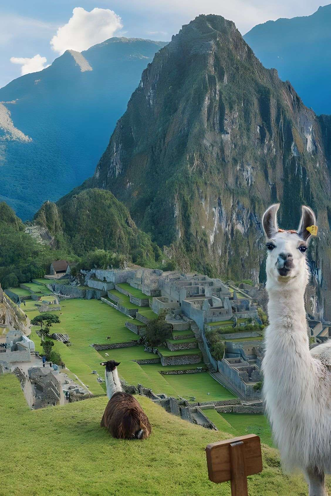
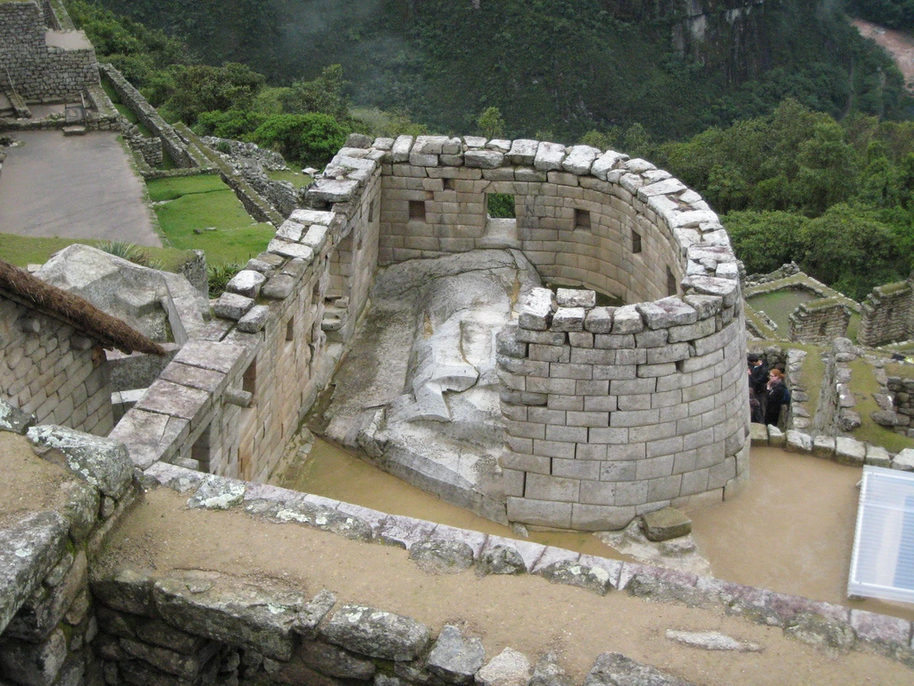

Sobre Machu Picchu
Machu Picchu é uma cidade antiga dos Incas, localizada no alto das montanhas dos Andes, no Peru.
É uma das atrações turísticas mais famosas do mundo,
e foi declarada Patrimônio Mundial pela UNESCO em 1983.
Além de sua importância histórica, Machu Picchu também é conhecida por sua beleza natural, e é um lugar popular para caminhadas e trilhas.
Iremos agora apresentar algumas curiosidades para despertar sua vontade de pesquisar e conhecer mais sobre essa cidade manífica.
Curiosidades
-
1. Nunca encontrado pelos espanhóis
Machu Picchu é referido como a “Cidade Perdida dos Incas” devido a crença os espanhóis nunca encontraram a cidade quando eles conquistaram o Império Inca nos anos 1500.
2. Já houve uma trilha indígena que ligava o litoral de SP até o império inca
Diversos relatos e registros históricos apontam que havia uma rede imensa de trilhas indígenas, as chamadas Peabirus, que cortavam toda a América do Sul e eram utilizadas pelos índios antes da chegada dos europeus.
3. Existe apenas uma construção arredondada
Uma construção diferente das demais no parque, principalmente por causa da forma arredondada em seus muros. Esse local é o templo do Sol e representava o luar mais sarada de toda a cidade, sendo o acesso permitido apenas para líderes e xamâs antios.
4. Machu Picchu era muito avançada na época
Até hoje, muitas dúvidas pairam sobre a real capacidade humana de pedras tão grandes em caminhos difíceis de serem percorridos em meio à mata densa e à altitude.
Se sentiu interessado a conhecer Machu Picchu?
Que tal conhecer aluns dos roteiros que podemos fazer para que a cidade seja explorada da melhor forma.
Roteiros
-
Trilha Inca
A trilha Inca é a rota mais famosa para chegar a Machu Picchu. Ela é uma caminhada de quatro dias, que passa por ruínas incas, florestas e montanhas, terminando em Machu Picchu. É uma trilha desafiadora, mas que oferece vistas incríveis.
-
Trilha Salkantay
A trilha Salkantay é uma alternativa menos movimentada à trilha Inca. Ela é uma caminhada de cinco dias, que também oferece vistas incríveis das montanhas, florestas e rios.
-
Passeio de trem
Se caminhar não é a sua praia, você pode fazer um passeio de trem de Cusco até Machu Picchu. O trem oferece vista panorâmica das montanhas e do Vale Sagrado dos Incas.